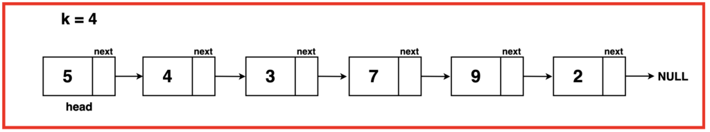

Problem Statement: Given the head of a singly linked list of `n` nodes and an integer `k`, where k is less than or equal to `n`. Your task is to reverse the order of eachgroup of `k`consecutivenodes, if `n` is not divisible by `k`, then the lastgroup of remainingnodes should remain unchanged.
Examples
Example 1:
Input Format:
LL: 1 2 3 4 5 6 7 8 9 10 K = 3
Output: 3 2 1 6 5 4 9 8 7 10
Explanation:
Group 1: Reverse nodes 1 -> 2 -> 3 to become 3 -> 2 -> 1.
Group 2: Reverse nodes 4 -> 5 -> 6 to become 6 -> 5 -> 4.
Group 3: Reverse nodes 7 -> 8 -> 9 to become 9 -> 8 -> 7.
Node 10 remains as is since there are no more groups of size K remaining.
Example 2:
Input Format:
LL: 5 4 3 7 9 2
K = 4

Output: 7 3 4 5 9 2
Explanation:
Group 1: Reversed nodes 5 -> 4 -> 3 -> 7 to become 7 -> 3 -> 4 -> 5.
Group 2: Nodes 9 -> 2 remain unchanged as they are not a complete group of size K.
Disclaimer: Don’t jump directly to the solution, try it out
yourself first.
Solution:
Reverse Linked List is a prerequisite to this question. Make sure you are thorough with the fundamentals and procedures that go into reversing a linked list.
Approach:
The approach simplifies reversing linked list nodes by breaking the list into segments of K nodes and reversingeachsegmentindividually. Starting from the head, the algorithm traverses the list to identify segments of K nodes. Upon finding a segment, it reversesit, returning the modified list. If a segment has less than K nodes left (ie. remainingnodes at the end), they are left unaltered.
To implement this (complex) algorithm we can break down the process into threeparts:
`reverseLinkedList`: This function takes the head of a segment as input and reverses the linked list formed by that segment. It operates by utilizing the classic iterative3-pointer method to reverse the direction of pointers within the segment. Read about this algorithm in detail here Reverse Linked List.
`getKthNode`: The purpose of this function is to identifytheend of a segment of K nodes in the linked list. Given a starting node, it traverses K nodes in the list and returnstheKth node, allowing the segmentation of the list into smallerparts for reversal.
`kReverse`: The mainfunction orchestrates the reversalprocess. It iterates through the linked list and identifies segments of K nodes using getKthNode. For each identified segment, it utilizes reverseLinkedList to reverse the nodes within that segment. This iterativeapproach efficiently reverses the linked list nodes in groups of K.
Algorithm:
Step 1: Initialise a pointer `temp` to the head of the linked list. Using `temp`, traverse to the Kth Node iteratively.
Step 2: On reaching the Kth Node, preserve the Kth Node’s next node as `nextNode` and set the Kth Node’s next pointer to `null`. This effectively breaks the linked list in a smallerlist of size K that can be reversed and attachedback.
Step 3: Treat this segment from `temp` to Kth Node as an individual linked list and reverse it. This can be done via the help of a helper function `reverseLinkedList` which has been discussed in detail in this article Reverse Linked List.
Step 4: The reversed linked list segment returns a modified list with `temp` now at its tail and the `KthNode` pointing to its head. Update the `temp`s `next` pointer to `nextNode`.
If we are at the firstsegment of K nodes, update the head to `Kth Node`.
Step 5: Continue this reversal for further groups. If a segment has fewer than K Nodes, leave them unmodified and return the new head. Use the prevLastpointer to maintain the link between the end of the previousreversedsegment and the currentsegment.
#include <iostream>
#include <bits/stdc++.h>
using namespace std;
// Node class represents a
// node in a linked list
class Node {
public:
// Data stored in the node
int data;
// Pointer to the next node in the list
Node* next;
// Constructor with both data and
// next node as parameters
Node(int data1, Node* next1) {
data = data1;
next = next1;
}
// Constructor with only data as a
// parameter, sets next to nullptr
Node(int data1) {
data = data1;
next = nullptr;
}
};
// This function has been explained
// in previous videos/articles
// Function to reverse a linked list
// using the 3-pointer approach
Node* reverseLinkedList(Node *head)
{
// Initialize'temp' at
// head of linked list
Node* temp = head;
// Initialize pointer 'prev' to NULL,
// representing the previous node
Node* prev = NULL;
// Traverse the list, continue till
// 'temp' reaches the end (NULL)
while(temp != NULL){
// Store the next node in
// 'front' to preserve the reference
Node* front = temp->next;
// Reverse the direction of the
// current node's 'next' pointer
// to point to 'prev'
temp->next = prev;
// Move 'prev' to the current
// node for the next iteration
prev = temp;
// Move 'temp' to the 'front' node
// advancing the traversal
temp = front;
}
// Return the new head of
// the reversed linked list
return prev;
}
// Function to get the Kth node from
// a given position in the linked list
Node* getKthNode(Node* temp, int k){
// Decrement K as we already
// start from the 1st node
k -= 1;
// Decrement K until it reaches
// the desired position
while(temp != NULL && k > 0){
// Decrement k as temp progresses
k--;
// Move to the next node
temp = temp -> next;
}
// Return the Kth node
return temp;
}
// Function to reverse nodes in groups of K
Node* kReverse(Node* head, int k){
// Initialize a temporary
// node to traverse the list
Node* temp = head;
// Initialize a pointer to track the
// ;ast node of the previous group
Node* prevLast = NULL;
// Traverse through the linked list
while(temp != NULL){
// Get the Kth node of the current group
Node* kThNode = getKthNode(temp, k);
// If the Kth node is NULL
// (not a complete group)
if(kThNode == NULL){
// If there was a previous group,
// link the last node to the current node
if(prevLast){
prevLast -> next = temp;
}
// Exit the loop
break;
}
// Store the next node
// after the Kth node
Node* nextNode = kThNode -> next;
// Disconnect the Kth node
// to prepare for reversal
kThNode -> next = NULL;
// Reverse the nodes from
// temp to the Kth node
reverseLinkedList(temp);
// Adjust the head if the reversal
// starts from the head
if(temp == head){
head = kThNode;
}else{
// Link the last node of the previous
// group to the reversed group
prevLast -> next = kThNode;
}
// Update the pointer to the
// last node of the previous group
prevLast = temp;
// Move to the next group
temp = nextNode;
}
// Return the head of the
// modified linked list
return head;
}
// Function to print the linked list
void printLinkedList(Node* head) {
Node* temp = head;
while (temp != nullptr) {
cout << temp->data << " ";
temp = temp->next;
}
cout << endl;
}
int main() {
// Create a linked list with
// values 5, 4, 3, 7, 9 and 2
Node* head = new Node(5);
head->next = new Node(4);
head->next->next = new Node(3);
head->next->next->next = new Node(7);
head->next->next->next->next = new Node(9);
head->next->next->next->next->next = new Node(2);
// Print the original linked list
cout << "Original Linked List: ";
printLinkedList(head);
// Reverse the linked list
head = kReverse(head, 4);
// Print the reversed linked list
cout << "Reversed Linked List: ";
printLinkedList(head);
return 0;
}
Output: Original Linked List: 5 4 3 7 9 2 K = 4 Linked List Reversed in groups of 4: 7 3 4 5 9 2
Time Complexity: O(2N) The time complexity consists of actions of reversingsegmentsof K and findingtheKthnode which operates in linear time. Thus, O(N) + O(N) = O(2N), which simplifies to O(N).
Space Complexity: O(1) The space complexity is O(1) as the algorithm operatesin place without any additional space requirements.
import java.util.*;
// Node class represents a
// node in a linked list
class Node {
// Data stored in the node
int data;
// Pointer to the next
// node in the list
Node next;
// Constructor with both data
// and next node as parameters
Node(int data, Node next) {
this.data = data;
this.next = next;
}
// Constructor with only data as
// a parameter, sets next to null
Node(int data) {
this.data = data;
this.next = null;
}
}
public class Main {
// Function to reverse a linked list
// using the 3-pointer approach
static Node reverseLinkedList(Node head) {
// Initialize'temp' at
// head of linked list
Node temp = head;
// Initialize pointer 'prev' to NULL,
// representing the previous node
Node prev = null;
// Traverse the list, continue till
// 'temp' reaches the end (NULL)
while(temp != null){
// Store the next node in
// 'front' to preserve the reference
Node front = temp.next;
// Reverse the direction of the
// current node's 'next' pointer
// to point to 'prev'
temp.next = prev;
// Move 'prev' to the current
// node for the next iteration
prev = temp;
// Move 'temp' to the 'front' node
// advancing the traversal
temp = front;
}
// Return the new head of
// the reversed linked list
return prev;
}
// Function to get the Kth node from
// a given position in the linked list
static Node getKthNode(Node temp, int k) {
// Decrement K as we already
// start from the 1st node
k -= 1;
// Decrement K until it reaches
// the desired position
while (temp != null && k > 0) {
// Decrement k as temp progresses
k--;
// Move to the next node
temp = temp.next;
}
// Return the Kth node
return temp;
}
// Function to reverse nodes in groups of K
static Node kReverse(Node head, int k) {
// Initialize a temporary
// node to traverse the list
Node temp = head;
// Initialize a pointer to track the
// last node of the previous group
Node prevLast = null;
// Traverse through the linked list
while (temp != null) {
// Get the Kth node of the current group
Node kThNode = getKthNode(temp, k);
// If the Kth node is NULL
// (not a complete group)
if (kThNode == null) {
// If there was a previous group,
// link the last node to the current node
if (prevLast != null) {
prevLast.next = temp;
}
// Exit the loop
break;
}
// Store the next node
// after the Kth node
Node nextNode = kThNode.next;
// Disconnect the Kth node
// to prepare for reversal
kThNode.next = null;
// Reverse the nodes from
// temp to the Kth node
reverseLinkedList(temp);
// Adjust the head if the reversal
// starts from the head
if (temp == head) {
head = kThNode;
} else {
// Link the last node of the previous
// group to the reversed group
prevLast.next = kThNode;
}
// Update the pointer to the
// last node of the previous group
prevLast = temp;
// Move to the next group
temp = nextNode;
}
// Return the head of the
// modified linked list
return head;
}
// Function to print the linked list
static void printLinkedList(Node head) {
Node temp = head;
while (temp != null) {
System.out.print(temp.data + " ");
temp = temp.next;
}
System.out.println();
}
public static void main(String[] args) {
// Create a linked list with
// values 5, 4, 3, 7, 9 and 2
Node head = new Node(5);
head.next = new Node(4);
head.next.next = new Node(3);
head.next.next.next = new Node(7);
head.next.next.next.next = new Node(9);
head.next.next.next.next.next = new Node(2);
// Print the original linked list
System.out.print("Original Linked List: ");
printLinkedList(head);
// Reverse the linked list
head = kReverse(head, 4);
// Print the reversed linked list
System.out.print("Reversed Linked List: ");
printLinkedList(head);
}
}
Output: Original Linked List: 5 4 3 7 9 2 K = 4 Linked List Reversed in groups of 4: 7 3 4 5 9 2
Time Complexity: O(2N) The time complexity consists of actions of reversingsegmentsof K and findingtheKthnode which operates in linear time. Thus, O(N) + O(N) = O(2N), which simplifies to O(N).
Space Complexity: O(1) The space complexity is O(1) as the algorithm operatesin place without any additional space requirements.
class Node:
def __init__(self, data, next_node=None):
self.data = data
self.next = next_node
# Function to reverse linked list
# using 3 pointer approach
def reverseLinkedList(head):
# Initialize 'temp' at the
# head of the linked list
temp = head
# Initialize 'prev' to None,
# representing the previous node
prev = None
while temp is not None:
# Store the next node in 'front'
# to preserve the reference
front = temp.next
# Reverse the direction of the current
# node's 'next' pointer to point to 'prev'
temp.next = prev
# Move 'prev' to the current
# node, for the next iteration
prev = temp
# Move 'temp' to 'front' node
# advancing traversal
temp = front
# Return the new head
# of the reversed linked list
return prev
# Function to get the Kth node from
# a given position in the linked list
def getKthNode(temp, k):
# Decrement K as we already
# start from the 1st node
k -= 1
# Decrement K until it reaches
# the desired position
while temp is not None and k > 0:
# Decrement k as temp progresses
k -= 1
# Move to the next node
temp = temp.next
# Return the Kth node
return temp
# Function to reverse nodes in groups of K
def kReverse(head, k):
# Initialize a temporary
# node to traverse the list
temp = head
# Initialize a pointer to track the
# last node of the previous group
prevLast = None
# Traverse through the linked list
while temp is not None:
# Get the Kth node of the current group
kThNode = getKthNode(temp, k)
# If the Kth node is NULL
# (not a complete group)
if kThNode is None:
# If there was a previous group,
# link the last node to the current node
if prevLast:
prevLast.next = temp
# Exit the loop
break
# Store the next node
# after the Kth node
nextNode = kThNode.next
# Disconnect the Kth node
# to prepare for reversal
kThNode.next = None
# Reverse the nodes from
# temp to the Kth node
reverseLinkedList(temp)
# Adjust the head if the reversal
# starts from the head
if temp == head:
head = kThNode
else:
# Link the last node of the previous
# group to the reversed group
prevLast.next = kThNode
# Update the pointer to the
# last node of the previous group
prevLast = temp
# Move to the next group
temp = nextNode
# Return the head of the
# modified linked list
return head
# Function to print the linked list
def printLinkedList(head):
temp = head
while temp is not None:
print(temp.data, end=" ")
temp = temp.next
print()
class Node:
def __init__(self, data):
self.data = data
self.next = None
# Create a linked list with
# values 5, 4, 3, 7, 9 and 2
head = Node(5)
head.next = Node(4)
head.next.next = Node(3)
head.next.next.next = Node(7)
head.next.next.next.next = Node(9)
head.next.next.next.next.next = Node(2)
# Print the original linked list
print("Original Linked List: ", end="")
printLinkedList(head)
# Reverse the linked list
head = kReverse(head, 4)
# Print the reversed linked list
print("Reversed Linked List: ", end="")
printLinkedList(head)
Output: Original Linked List: 5 4 3 7 9 2 K = 4 Linked List Reversed in groups of 4: 7 3 4 5 9 2
Time Complexity: O(2N) The time complexity consists of actions of reversingsegmentsof K and findingtheKthnode which operates in linear time. Thus, O(N) + O(N) = O(2N), which simplifies to O(N).
Space Complexity: O(1) The space complexity is O(1) as the algorithm operatesin place without any additional space requirements.
class Node {
constructor(data, next = null) {
this.data = data;
this.next = next;
}
}
// Function to reverse a linked list
// using the 3-pointer approach
function reverseLinkedList(head) {
// Initialize pointer 'temp' at
// head of the linked list
let temp = head;
// Initialize a pointer 'prev' to null
// representing the previous node
// (initially none)
let prev = null;
// Traversing the list, continue until
// 'temp' reaches the end (null)
while (temp !== null) {
// Store the next node in
// 'front' to preserve the reference
let front = temp.next;
// Reverse direction of current node's
// 'next' pointer to point to 'prev'
temp.next = prev;
// Move 'prev' to the current node,
// preparing it for the next iteration
prev = temp;
// Move 'temp' to the 'front' node
// (the next node), advancing traversal
temp = front;
}
// Return the new head of
// the reversed linked list
return prev;
}
// Function to get the Kth node from
// a given position in the linked list
function getKthNode(temp, k) {
// Decrement K as we already
// start from the 1st node
k -= 1;
// Decrement K until it reaches
// the desired position
while (temp !== null && k > 0) {
// Decrement k as temp progresses
k--;
// Move to the next node
temp = temp.next;
}
// Return the Kth node
return temp;
}
// Function to reverse nodes in groups of K
function kReverse(head, k) {
// Initialize a temporary
// node to traverse the list
let temp = head;
// Initialize a pointer to track the
// last node of the previous group
let prevLast = null;
// Traverse through the linked list
while (temp !== null) {
// Get the Kth node of the current group
let kThNode = getKthNode(temp, k);
// If the Kth node is NULL
// (not a complete group)
if (kThNode === null) {
// If there was a previous group,
// link the last node to the current node
if (prevLast) {
prevLast.next = temp;
}
// Exit the loop
break;
}
// Store the next node
// after the Kth node
let nextNode = kThNode.next;
// Disconnect the Kth node
// to prepare for reversal
kThNode.next = null;
// Reverse the nodes from
// temp to the Kth node
reverseLinkedList(temp);
// Adjust the head if the reversal
// starts from the head
if (temp === head) {
head = kThNode;
} else {
// Link the last node of the previous
// group to the reversed group
prevLast.next = kThNode;
}
// Update the pointer to the
// last node of the previous group
prevLast = temp;
// Move to the next group
temp = nextNode;
}
// Return the head of the
// modified linked list
return head;
}
// Function to reverse the linked list
function reverseLinkedList(head) {
let prev = null;
let current = head;
let next = null;
while (current !== null) {
next = current.next;
current.next = prev;
prev = current;
current = next;
}
head = prev;
}
// Function to print the linked list
function printLinkedList(head) {
let temp = head;
let result = "";
while (temp !== null) {
result += temp.data + " ";
temp = temp.next;
}
console.log(result);
}
// Create a linked list with
// values 5, 4, 3, 7, 9, and 2
let head = new Node(5);
head.next = new Node(4);
head.next.next = new Node(3);
head.next.next.next = new Node(7);
head.next.next.next.next = new Node(9);
head.next.next.next.next.next = new Node(2);
// Print the original linked list
console.log("Original Linked List: ");
printLinkedList(head);
// Reverse the linked list
head = kReverse(head, 4);
// Print the reversed linked list
console.log("Reversed Linked List: ");
printLinkedList(head);
Output: Original Linked List: 5 4 3 7 9 2 K = 4 Linked List Reversed in groups of 4: 7 3 4 5 9 2
Time Complexity: O(2N) The time complexity consists of actions of reversingsegmentsof K and findingtheKthnode which operates in linear time. Thus, O(N) + O(N) = O(2N), which simplifies to O(N).
Space Complexity: O(1) The space complexity is O(1) as the algorithm operatesin place without any additional space requirements.
In case you are learning DSA, you should definitely check out our free A2Z DSA Course with videos and blogs.
Special thanks to Gauri Tomar for contributing to this article on takeUforward. If you also wish to share your knowledge with the takeUforward fam, please check out this article